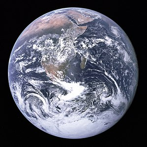

April 22, 2018
Good News on Earth Day!

Our final ‘Birthday to Earth Day’ post—before we announce our grants later today—is from Coleman, Finley’s big brother, and gives a little well deserved encouragement for all the efforts we have been making to green our ways.
—
Everyone knows that humanity is causing the planet a few problems, and good news at the global level can be hard to come by. So in order to stay positive, we at Finley’s Green Leap Forward focus on personal action towards solutions. But for Earth Day this year we’d like to end with a global perspective and a small pat on the back for humanity.
The good news comes in the form of a subtle but potentially significant positive sign for global sustainability. As reported in [1] the Tennessee Valley Authority (the oldest and largest regional energy planning agency of the US federal government) “now expects to sell 13 percent less power in 2027 than it did two decades earlier — the first sustained reversal in the growth of electricity usage in the 85-year history of TVA.”
And as shown in [2] this is largely the result of increases in efficiency, not economic recession. This second point is significant because it shows that there is not a zero-sum game between the well-being[^1] of society at large and that of the environment.
Of course, to many of us who have been inspired by Finley this will not come as a surprise. We know how easy it can be to change a habit and make your daily routine a little more efficient, a little greener, and enjoy the inevitable increase in personal well-being that follows. But it is still encouraging to see the rest of the world catching on!
[^1]: According to an Economist’s ideas of what constitutes well-being 😉
[2]: https://www.vox.com/energy-and-environment/2018/2/27/17052488/electricity-demand-utilities
Photo: The Blue Marble — Taken by Astronauts aboard Apollo 17 in 1972